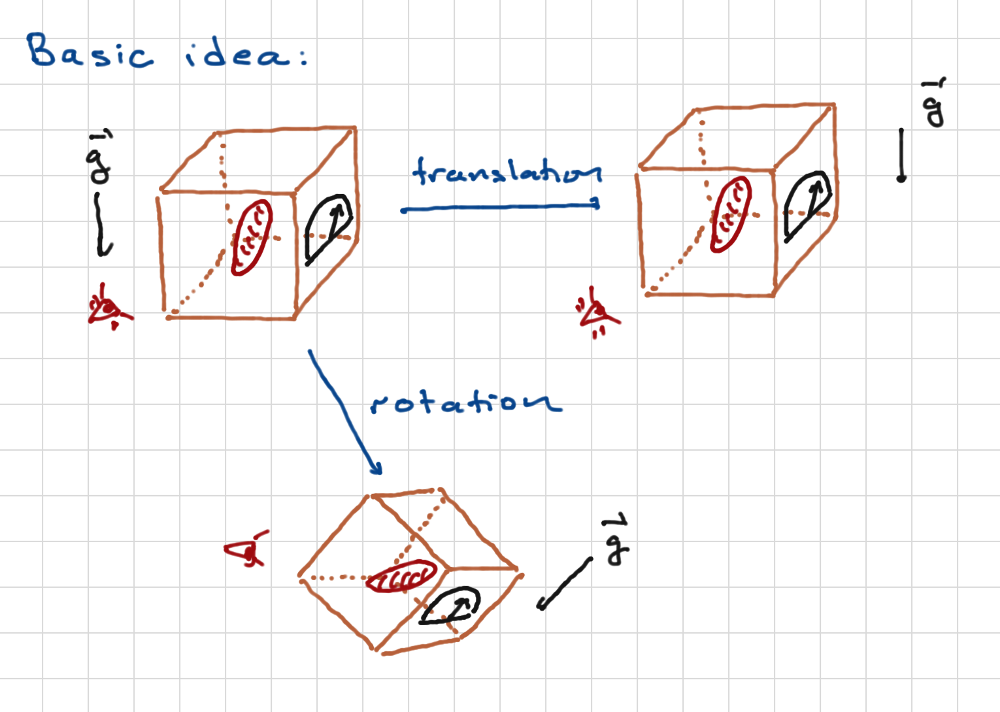

Transformations and symmetries#

Above we see how tranlations and rotations act on a measurement process. Note that we apply them to the system itself (the red formless blob), the experimental apparatus (the box with the dial), the observer, and the environment (such as the gravitational field). We can think of these as active transformations, physically rotating everythingl or as passive transformations, corresponding to changes of coordinates.
Either way, the principle is that with such transformations, the results of experiments should be the same.
Transformations#
Definition#
To begin with, we give a precise definition of transformations acting on quantum systems. These are linear maps
for all states \(\ket{\psi'}\) and operators \({\cal O}'\), such that observed quantities do not change. These are matrix elements:
(you might think you want to know all matrix elements of \({\cal O}\), but in practice measurements can be phrased as expectation values of projecttion operators as we have discussed – also, it happens that if you know the expectation value of \({\cal O}\) for all states, you know all matrix elements. We’ll prove that at the end of this section so as not to interrupt the flow).
One can easily prove the following (see [Bellac, 2006] or messiah1999quantum):
Theorem: give a transformation \({\cal T}\), we can modify the transformed states \(\ket{\psi'} \to e^{i\alpha(\ket{\psi'})}\ket{\psi'}\) such that the transformation is implemented by a linear operator \(U_{{\cal T}}\):
such that \(U^{\dagger}_{{\cal T}} = U^{-1}_{{\cal T}}\) and \(U_{{\cal T}}\) is either:
A linear operator (and thus unitary), or
An antilinear operator, that is one satsifying
Antilinear operators of this kind are important in particle physics and quantum condensed matter physics – in particular the transformation of time reversal is implemented by such an operator.
Before continuing, we’ll fulfill our promise by showing that knowledge of \(\bra{\psi}\cO\ket{\psi}\) for all states \(\ket{\psi}\) yields all matrix elements of \(\cO\). Let us say that we want to find \(\bra{\alpha} \cO \ket{\beta}\). We define two linear combinations
Then
That is, \(\bra{\alpha}\cO\ket{\beta}\) can be written in terms of expectation values of \(\cO\) in various states.
Examples#
It is worth mentioning a few examples:
Translations. These are induced by the spatial transformation \({\vec x} \to {\vec x} + {\vec a}\). The action on wavefunctions would be \(\psi({\vec x}) \to \psi({\vec x} - {\vec a})\). As we’ve shown before, \(U_{{\vec a}} = e^{- i {\hat{\vec p}}\cdot a/\hbar}\);
and
Rotations. These will be explained in great detail below.
Parity. This is related to the spacetime transformation \({\vec x} \to - {\vec x}\). In quantum mechanics it is implemented by a unitary operator \(\Pi = \Pi^{\dagger} = \Pi^{-1}\). For states in \(L^2(\CR^3)\) we have
Isospin. Nucleons have a spin degree of freedom and also an “isospin” degree of freedom; these contribute a factor \(\cH = \CC^2 \otimes \CC^2\) to the hilbert space. Just as a good basis for the Hilbert space of a spin-\(\half\) particle is the spin-up and spin-down states along some axis, a good basis for the isospin degree of freedom is the proton state and the neutron state. That these are degrees of freedom and not just labels of a particle is made clear by beta decay, in which a neutron can decay into a proton (by emitting a positron and an electron neutrino). This is a classic example of an internal symmetry, a symmetry that is not related to some transformation of spacetime.
Time translations which take \(\ket{\psi(t)} \to \ket{\psi(t + T)}\).
Transformation groups#
Clearly a a sequence of transformations is itself a transformation. When implemented via linear operators, this arises because for \(U_1, U_2\) unitary operators, \(U_1 U_2\) is also unitary as you can easily check. In fact, transformations form a group. It is worth stepping back and describing this mathematical object. Groups are a classic case of simple systems yielding rich structures; group theory yields powerful results and insights into quantum mechanics.
A group \(G\) is a collection of objects \(g, h, ...\) which could be countable (disceret) or uncountable, endoweed with a multiplication law such that \(g\cdot h \in G\) \forall gm h \in G$. This multiplication law satisfies the following properties:
Existence of an identity. There is an element \(e \in G\) such that \(e g = g e = g \forall g \in G\).
Existence of an inverse. For every \(g \in G\), there exists a group element \(g^{-1} \in G\) such that \(g g^{-1} = g^{-1} g = e\).
Associativity. For any \(f, g, g \in G\),
where one does the multiplication in parentheses first.
Note that in general it is not true that \(g\cdot h h \cdot g\). Groups that satisfy this property are called Abelian; otherwise they are called non-Abelian.
There are many examples of groups. A few are
Discrete translations in space \({\vec x} \to {\vec x} + \sum_i n_i {\vec a}^i\), for \({\vec a}\) a collection of linearly independent vectors and \(n_i \in \CZ\). This is clearly an Abelian group; “multiplication” in this case is simply vector addition.
Permutations. These are one-to-one and onto transformations of \(n\) elements into themselves:
This group is often called \(S_n\), and it is non-Abelian if \(n > 2\); I recommend convincing yourself of this by playing with \(S_3\).
\(n \times n\) invertible matrices (\(GL(n, \CR)\) for real matrices or \(GL(n,\CC)\) for complex matrices). These form a non-Abelian group under matrix multiplication.
Unitary representations#
For a group \(G\), a unitary representation is a Hilbert space \(\cH\) together with a map \(g \to U_g\) of group elements to unitary operators that respects the group transformation law
That is to say the map from G to unitary operators is a group homomorphism. Note that this reuires that \(U_e = {\bf 1}\), \(U_{g^{-1}} = U_g^{\dagger}\).
As a side note: there are also projective representations, which correspond to the above map but a modified multiplication law:
where \(\alpha\) is a real number.
Symmetries#
A particularly important class of transformations are symmetries: transformations that preserve the system’s dynamics. More precisely, they preserve the Hamiltonian:
The essential point is that eigenstates of \(U\) will also be eigenstates of \(H\) (this will become more obvious, perhaps, when we consider infinitesimal transformations, for which \(U\) can be approximated by a Hermitian operator). Thus, for example, \(H = \frac{p^2}{2m}\) is a
In practice we are often interested in approximate symmetries. This means that we can write
such that \(U_{{\cal T}} H_0 U_{{\cal T}}^{\dagger} = H_0\) but \(U_{{\cal T}} \Delta U_{{\cal T}}^{\dagger} \neq \Delta\). This is an “approximate symmetry” if \(\bra{\psi}H_0\ket{\psi} \gg \bra{\psi}\Delta\ket{\psi}\) for states \(\psi\) of interest (that is, for states which appear in measured processes). An important example is nuclear isospin, which transforms protons into neutrons. If this was an exact symmetry, this transformation would preserve the eigenstate of the Hamiltonian, which would include the rest mass of said particles. But of course in practice, the rest masses are not the same, though they are close: \(m_pc^2 = 938.272 MeV\) and \(m_n c^2 = 939.565 MeV\). Roughly we can write
for the interaction between nucleaons and other fundamental particles. At internucleon distances, the strong nuclear force dominates, and preserves nuclear isospin, The electromagnetic and weak interactions break it (for example via coulomb repulsion of protons as opposed to neutrons), but it is weak at these scales.
Continous vs. Discrete Transformations#
Discrete transformations correspond to groups which have a countable set of elements. Examples are:
Translations by integer multiples of a fixed vector \({\vec a}\), as might be important in a crystal lattice. The associate group is the group of integers, with group multiplication realized by addition of integers (thus the “identity element” is the integer zero, and the inverse of an integer is its negative). Note that this is an Abelian group. For particle mechanics with \(H = L^2(\CR^d)\), the translations are represented by unitary operators \(U_n = e^{- in {\hat{\vec p}}\cdot{\vec a}/\hbar}\).
Rotations by \(2\pi k/N\) in two dimensions for \(N, 0 \leq k < N\) integers. Here the group is \(\CZ_N\), integers mod N. This is an Abelian group.
Permutations of \(n\) elements. This is a non-Abelian group.
Crystallographic transformations; for example, rotations by multiples of \(\pi/2\) (90 degrees) about the \(x,y,z\) axes. These are symmetries for cubic lattices. These are generally non-Abelian groups.
Parity
Continuous transformations. These are transformations labelled by families of continuous real parameters \(t_1,\ldots,t_N\). \(N\) here would be the dimension of the group – the number of independent coordinates needed to describe its elements. (We could also consider complex parameters of course; still these can be written in terms of their real and imaginary parts so we will stick to real parameters)
Examples:
Continuous transformations. As with discrete transformations, but by any vector \({\vec a}\). Note that these are symmetries if \(H = \frac{{\hat{\vec p}}^2}{2m}\). This is an Abelian group.
Continous rotations in any dimension. In 2 dimensions this is Abelian; in 3 or higher, it is non-Abelian. We will describe this group in more detail below.
Nuclear isospin. The relevant group is that of all \(2\times 2\) unitary matrices with unit determinant, also called \(SU(2)\).
Infinitesimal transformations#
Now let us consider a continuous family of transformations that includes the identity. We choose coordinates such that the identity is the origin of the coordinate system.
By infinitesimal tranformations we mean ones for which \(U\) (or more precisely, its matrix elements) can be well approximated by an \(\cO(t_k)\) approximation, that is
where \(A_k\) is some operator. The demand that \(U\) be unitary at \(\cO(t)\) means:
In other words, we must have \(A_k = A_k^{\dagger}\): infinitesimal transformations are described by Hermitian operators.
Let us write $t_k A_k From an infinitesimal transformation. We can build up a finite transformations via
It is easy to show that the set of operators \(U(t)\) form an Abelian group (a subgroup of the transformation group) with \(U(t_1) U(t_2) = U(t_1 + t_2)\), for which \(U(-t) = U^{\dagger}\). Depending on the eigenvalues of \(A\), this group is equivalent to either \(\CR\) or \(S^1\); the latter will appear if the eigenvalues of \(A\) are integer multiples of some basic interval \(\delta t\), so that \(t \equiv t _ \delta t\). We say that the Hermitian operators generate the symmetry.
If we have two unitary operators of the form \(U_A = e^{i t A}\) and \(U_B = e^{i s B}\), the lack of commutativity of the unitary operators can be related to the lack of commutativity of \(A,B\). To see this, compute
So the unitary operators commue if their infinitesimal generators commute.
Infinitesimal symmetries#
Demanding \(U(t) H U(t)^{\dagger} = H\) for an infinitesimal symmetry means
which implies \([A,H] = 0\). This is called an infinitesimal symmetry. The generator is a Hermitian operator which commutes with the Hamiltonian. This, it is associated to a conserved quantity. For example, you can show that
is independent of time, since
Similarly, if \(A\ket{\psi(t)} = a \ket{\psi(t)}\) at some time \(t\), with \(a\) an eigenvalue of \(A\), this equation will be true for all \(t\). This is the quantum analog of Noether’s theorem.
Two important examples:
Time translations. If \(H\) is time-independent, then since \([H, H] = 0\) and \(U(t) = e^{- i t H/\hbar}\) is the unitary operator generating time translations, time translations is a symetry of the theory and is tied to energy conservation.
Spatial translations. Infinitesimal transformations are generated by the momentum operator. If \(H = H({\vec p})\), then \([p, H] = 0\) and momentum is conserved.